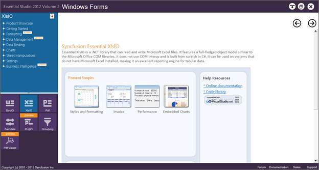
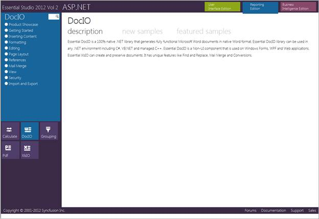
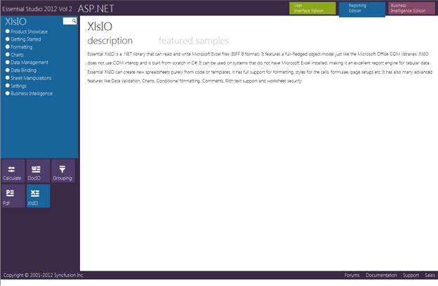
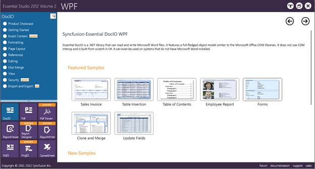
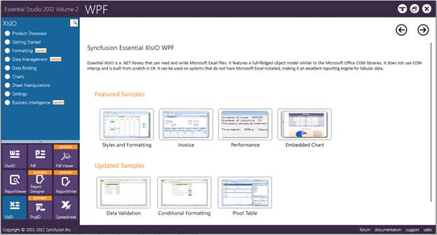
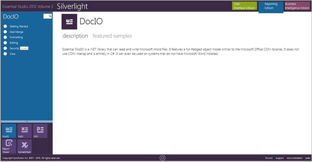
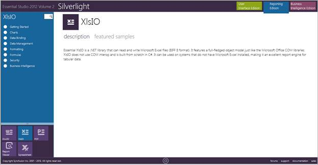
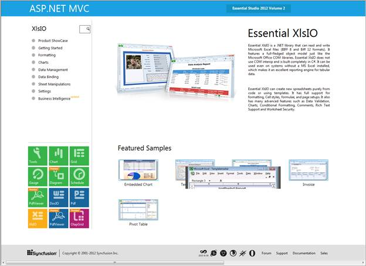

This section covers the location of the installed samples and describes the procedure to run the samples through the sample browser and online.
Sample Installation Locations
Various locations of samples for Essential XlsIO corresponding to each platform are given below:
· Windows Forms Samples-The Windows Forms samples are installed under the following location.
...\My Documents\Syncfusion\EssentialStudio\Version Number\Windows\XlsIO.Windows\Samples\2.0
· ASP.NET Samples-The ASP.NET samples are installed under the following location.
...\My Documents\Syncfusion\EssentialStudio\Version Number\Web\xlsio.web\Samples\2.0
· WPF Samples-The WPF samples are installed under the following location.
...\My Documents\Syncfusion\EssentialStudio\Version Number\WPF\XlsIO.WPF\Samples\3.5
· Silverlight Samples-The Silverlight samples are installed under the following location.
...\My Documents\Syncfusion\EssentialStudio\Version Number\Silverlight\XlsIO.Silverlight\Samples\3.5
· ASP.NET MVC Samples-The ASP.NET MVC samples are installed under the following location.
...\My Documents\Syncfusion\EssentialStudio\<Version Number>\MVC
 Note: Essential XlsIO does not provide direct
support for Silverlight and cannot generate documents in client side. It is only
possible to generate the documents in server side and view it in client
interface. Samples in the sample browser use web services and generate the
documents in the server side.
Note: Essential XlsIO does not provide direct
support for Silverlight and cannot generate documents in client side. It is only
possible to generate the documents in server side and view it in client
interface. Samples in the sample browser use web services and generate the
documents in the server side.
Viewing Samples
To view the samples:
1. Click Start-->All Programs-->Syncfusion -->Essential Studio <version number> -->Dashboard.
2. Click Reporting Edition.

Figure 2: Syncfusion Essential Studio Reporting Dashboard
The steps to view the XlsIO samples in various platforms are discussed below:
Windows Forms
1. In the dashboard window, click Run Samples for Windows Forms under Reporting Edition panel. The Windows Forms Sample Browser window is displayed.
Note: You can view the samples in any of the
following three ways:
· Run Samples - Click to view the locally installed samples.
· Online Samples - Click to view online samples.
· Explore Samples - Explore Windows Forms samples on disk.

Figure 3: Windows Forms Sample Browser
2. Click XlsIO form the bottom-left pane. The XlsIO samples are displayed.

Figure 4: XlsIO Samples Displayed in the Windows Forms Sample Browser
3. Select any sample and browse through the features.
ASP.NET
1. In the dashboard window, click Run Samples for ASP.NET under Reporting Edition panel. The ASP.NET Sample Browser window is displayed.
Note: You can view the samples in any of the three
ways displayed.

Figure 5: ASP.NET Sample Browser
2. Click XlsIO from the bottom-left pane. The XlsIO samples are displayed.

Figure 6: XlsIO Samples Displayed in the ASP.NET Sample Browser
3. Select any sample and browse through the features.
WPF
1. In the dashboard window, click Run Samples for WPF under Reporting Edition panel. The WPF Sample Browser window is displayed.
Note: You can view the samples in any of the three
ways displayed.

Figure 7: WPF Sample Browser
2. Click XlsIO from the bottom-left pane. The XlsIO samples are displayed.

Figure 8: XlsIO Samples Displayed in the WPF Sample Browser
3. Select any sample and browse through the features.
Silverlight
1. In the dashboard window, click Run Samples for Silverlight under Reporting Edition panel. The Silverlight Sample Browser window is displayed.
Note: You can view the samples in any of the three
ways displayed.

Figure 9: Silverlight Sample Browser
2. Click the XlsIO drop-down on the right pane. The XlsIO samples are displayed.

Figure 10: XlsIO Samples Displayed in the Silverlight Sample Browser
3. Select any sample and browse through the features.
ASP.NET MVC
1. In the dashboard window, click Run Samples for ASP.NET MVC under Reporting Edition panel. The ASP.NET MVC Sample Browser window is displayed.
Note: You can view the samples in any of the three
ways displayed.

Figure 11: ASP.NET MVC Sample Browser
2. Click XlsIO from the bottom-left pane. The XlsIO samples are displayed.

Figure 12: XlsIO Samples Displayed in the ASP.NET MVC Sample Browser
3. Select any sample and browse through the features.
Source Code Location
The default locations of the source code for Essential XlsIO corresponding to each platform are given below:
· Windows-The source code for Windows platform is located at the following location.
[System Drive]:\Program Files\Syncfusion\Essential Studio\[Version Number]\Base\XlsIO.Windows\Src
· WPF-The source code for WPF platform is located at the following location.
[System Drive]:\Program Files\Syncfusion\Essential Studio\[Version Number]\Base\XlsIO.WPF\Src
· MVC-The source code for MVC platform is located at the following location.
[System Drive]:\Program Files\Syncfusion\Essential Studio\[Version Number]\MVC\XlsIO.MVC\Src
· Web-The source code for ASP.NET platform is located at the following location.
[System Drive]:\Program Files\Syncfusion\Essential Studio\[Version Number]\Web\XlsIO.Web\Src